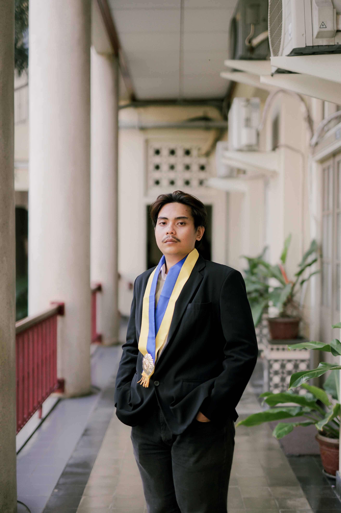

Welcome to my portfolio
Hi, I'm Nurul
Fakhri Ma'arif.
Civil Engineering Graduate specializing in structural supervision, project management, and data automation.

About Me
Civil Engineering fresh graduate from Universitas Gadjah Mada with a strong focus on construction supervision, quality control, and field operations. Possesses a solid analytical foundation combined with practical exposure to verifying field execution against shop drawings and ensuring strict adherence to technical specifications. Gained valuable hands-on experience as an intern overseeing daily construction activities and managing progress documentation. Eager to leverage strong adaptability, problem-solving abilities, and project tracking skills to ensure smooth, timely, and safe project delivery.
Areas of Expertise
Core Competencies
Structural & Field
- + Structural Modeling (3D)
- + Engineering Drawing Review
- + Quality Control & Inspection
- + Design Review & Assessment
Project Management
- + S-Curve Variance Analysis
- + Early Warning Systems
- + Work Breakdown Structure
- + Progress Tracking
Software & Tools
- + AutoCAD, SAP2000, Revit
- + SketchUp, Enscape
- + Python, Excel VBA
- + Microsoft Office
Professional Experience
Site Supervisor Intern
PT. ARSS Baru KSO PT. Intimulya Multi Kencana | Terban, Yogyakarta
- Assisted the site management team in overseeing daily construction activities for Proyek Revitalisasi Pasar Terban.
- Inspected concrete reinforcement, formwork installations, and casting processes to ensure work quality aligns with structural technical specifications and shop drawings.
- Monitored daily construction activities, gaining hands-on understanding of structural integrity and translating design elements into safe field execution.
- Documented daily progress and generated CAD outputs as a weekly progress summary for Revit integration.
Project Documentation
Steel Structure Drafter Engineer
PT. Bhineka Cipta Karya | JABABEKA, Cikarang
- Shadowed engineering teams during field operations to observe structural quality control procedures, including soil testing and foundational works.
- Actively enhanced structural modeling and detailing capabilities through intensive practical training in Tekla Structures.
Field Assessment
Projects & Organization
Construction Project Monitoring and Delay Risk Detection System
- Completed a thesis titled "PENGEMBANGAN SISTEM MONITORING DAN DETEKSI RISIKO KETERLAMBATAN PROYEK KONSTRUKSI BERBASIS INTEGRASI EXCEL VBA DAN MACHINE LEARNING".
- Developed an early warning system to track work schedules and utilized S-curve analysis to evaluate and compare planned versus actual project progress.
- Demonstrated advanced computational programming skills (Python/VBA) through machine learning implementation.
Live Excel Dashboard
Sabo Dam Building Design
- Collaborated within a multidisciplinary engineering team to formulate a comprehensive, ready-to-build design for a Sabo Dam located on the Gendol River.
- Conducted rigorous structural calculations and stability analyses to ensure the structural integrity and safety of the dam.
- Designed the geometric dimensions and physical structural layout by integrating hydrological data and topographical site conditions.
- Executed complete 3D modeling and rendering, translating raw ground contour data into a detailed visual representation of the final structure.
3D Render Videos
Head of Technical Division
PKTSL FT UGM
- Led a team of 24 students in planning and executing departmental programs to fulfill civil engineering software requirements.
- Drove cross-divisional collaboration to execute departmental events and organized internal upskilling.
Staff of Technical Division
PKTSL FT UGM
- Collaborated with peers to deliver practical software training accommodating students' technical needs.
- Actively communicated across divisions to support joint events and participated in peer-to-peer training.
Staff of Public Relation Division - FCEC
Civil In Action (CIA UGM)
- Acted as the primary liaison between the organizing committee and educational institutions.
- Successfully executed nationwide outreach to invite high schools across Indonesia to participate in the FCEC paper competition.
Education
Universitas Gadjah Mada (UGM)
Bachelor of Civil Engineering
Concentration in Structural Engineering
SMAN 78 Jakarta
Senior High School
Science Major (MIPA)
Let's Connect
Interested in discussing job opportunities or collaborations?
Feel free to reach out through the contacts below.